Training Program for Level I Duck Operators
Plus 3 live exercises and 4 knowledge check quizzes (80% to pass).
This is our Autonomous Trailer Unloading Robot — also known as the Dock Duck. It automates one of the most physically demanding tasks in warehouse logistics.
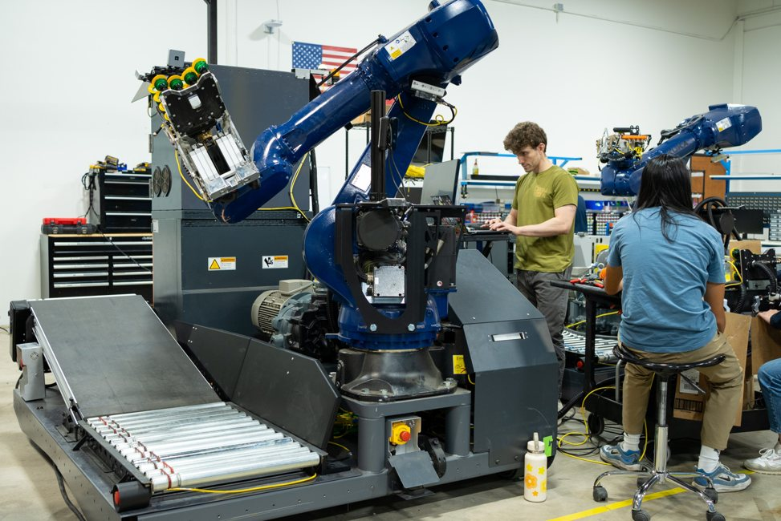
We automate offloading floor-loaded trailers. The Duck enters the container, picks up boxes one at a time, and places them onto the conveyor system for palletization.
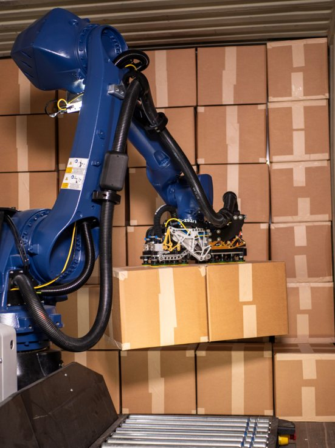
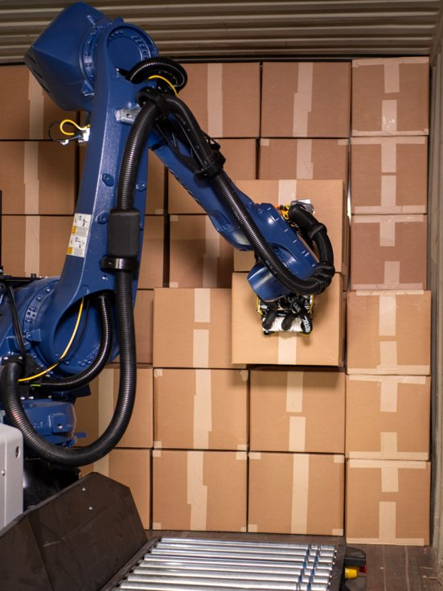
Reduces injury risk for associates and allows them to work on safer tasks.
Keeps associates inside the warehouse and out of extremely hot or cold containers.
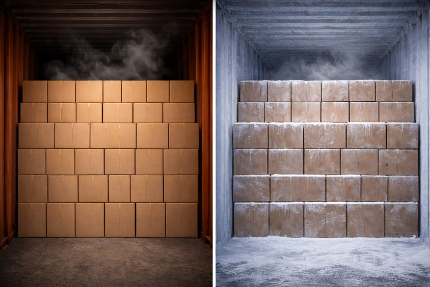
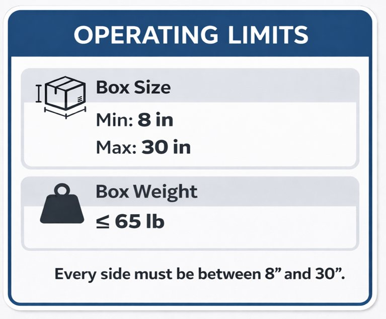
| Parameter | Specification |
|---|---|
| Box Size (each side) | 8 in — 30 in |
| Box Weight | ≤ 65 lb |
In Scope: Floor-loaded trailers with standard cardboard boxes.
Out of Scope: Palletized loads, covered sheets, boxes under 8".
Out of Scope
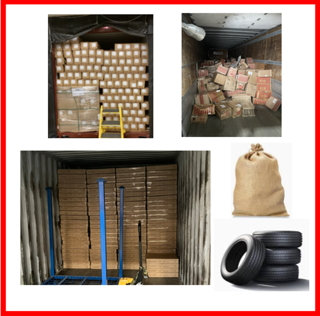
In Scope
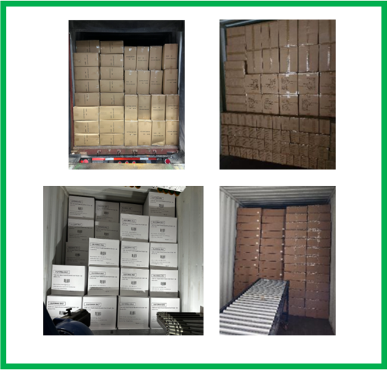
The Duck system consists of the robot, safety fence, safety cart, conveyors, ramp, and the container at the dock.
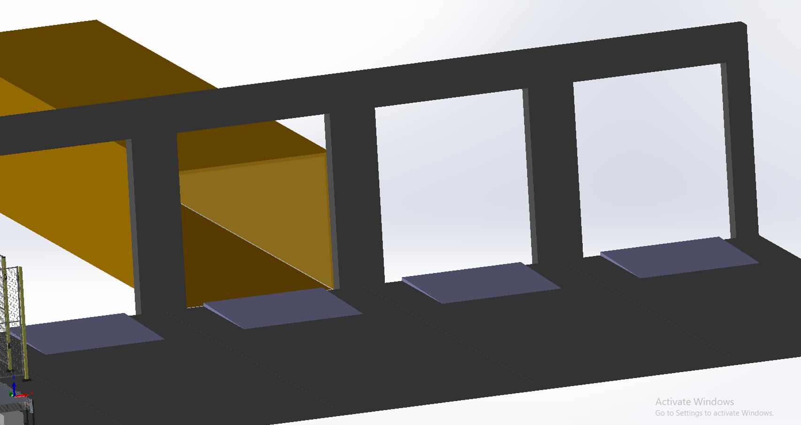
KUKA robotic arm, gripper, conveyors, and drive system on a mobile platform.
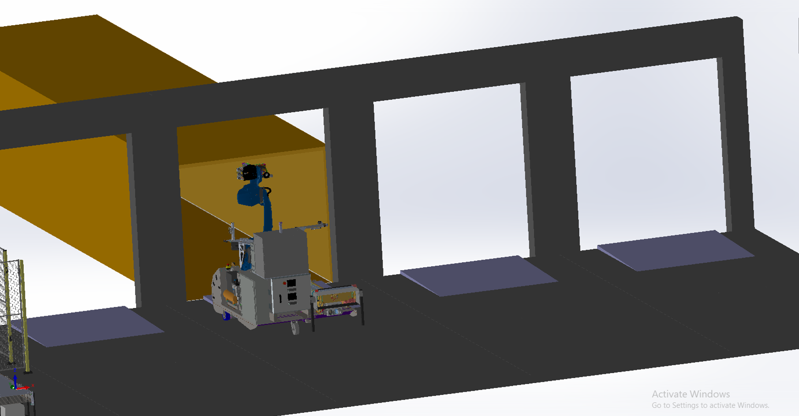
Interlock fence prevents unauthorized access. Safety cart is the operator station.
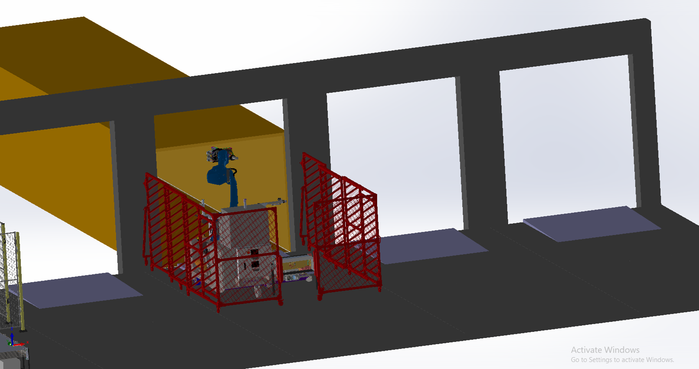
The full system at a warehouse dock — Duck, conveyors, safety cart, and palletizer.
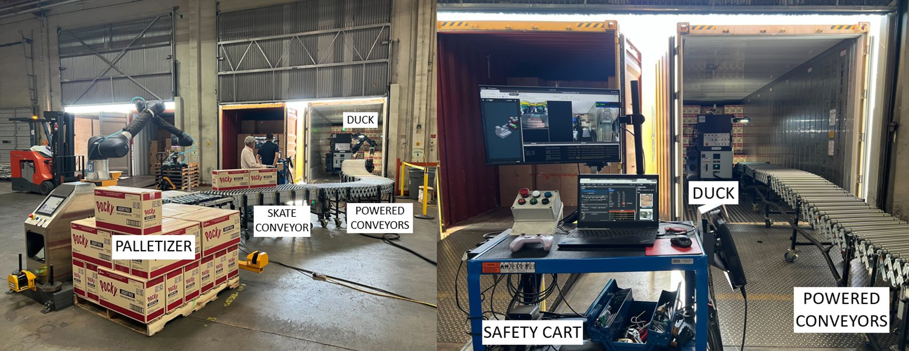
Box lands on the flat conveyor built into the Duck
Box moves to the sloped (powered) conveyor
Box moves to the flex conveyor to finally get palletized
Uses suction cups to pick boxes from the container wall. Adapts to different sizes and positions.
Industrial robotic arm provides reach and force to grab boxes anywhere inside the container.
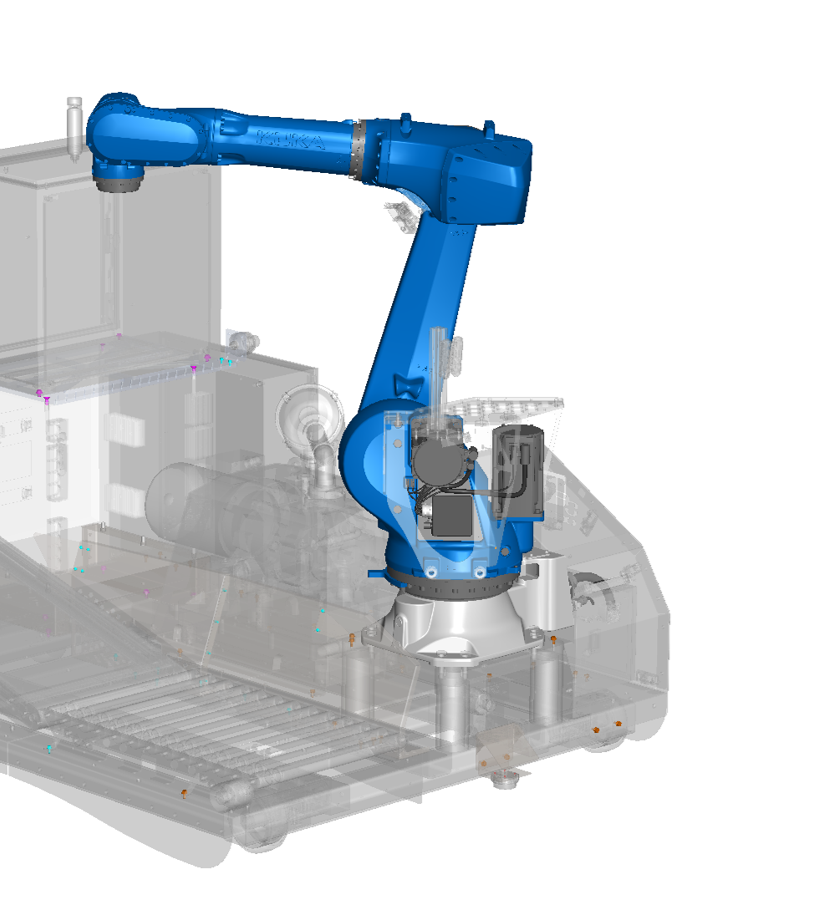
The Duck system includes powerful industrial equipment. Key safety concerns:
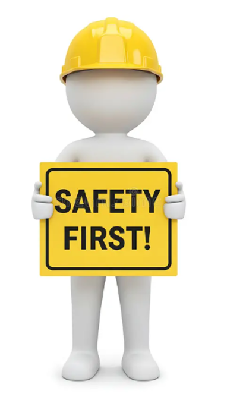
KUKA Robotic Arm:
High Voltage (480V):
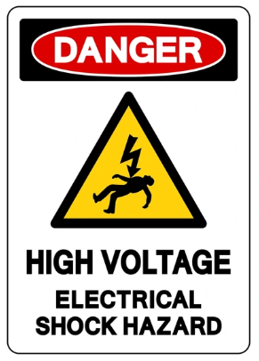
Know where all 6 emergency stop buttons are. In an emergency, press the nearest one immediately.
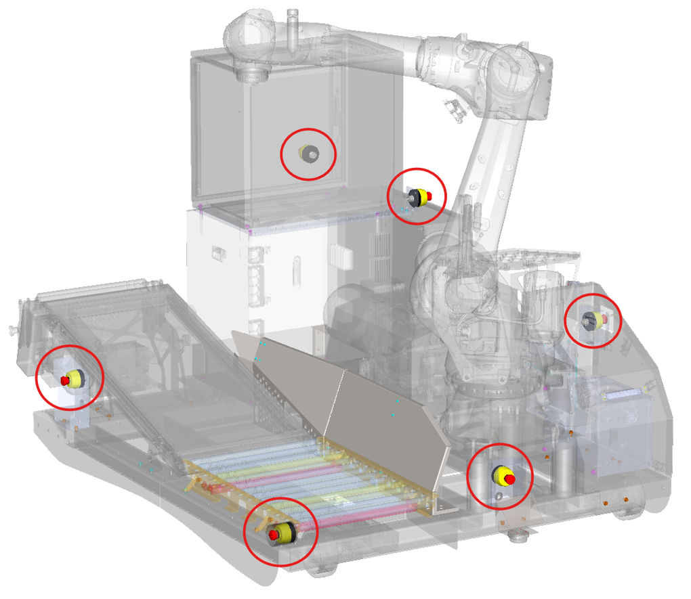
Your instructor will walk you through the physical Duck system, point out all safety features, E-stops, and components you've learned about.
The Duck has four states, indicated by the Status Indicator Light:
In Yellow (Manual) mode, drive the Duck with an Xbox Controller. Used to move the Duck from storage to the container and back.
Position at the designated operator station
Drive to container opening using Xbox controller (Yellow mode)
Connect powered and flex conveyors to palletization area
Deploy fence and ensure all interlocks engaged
After unloading is complete, tear down in reverse order:
Retract and stow
Disconnect and collapse
Drive back to storage (Yellow mode)
Return to storage position
Practice the full setup and teardown procedure with your instructor. Position all components and verify safety interlocks.
Operator User Interface
The Cloud UI runs in a browser on the Safety Cart laptop. It's your primary interface for monitoring and controlling the Duck.
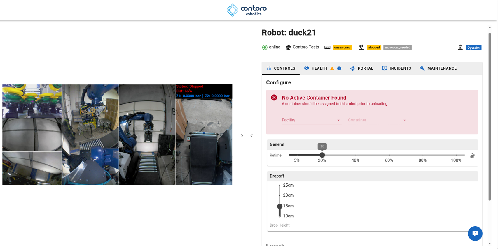
| Tab | Purpose |
|---|---|
| Controls | Robot speed, drop-off height, start/pause unloading |
| Health | Hardware, software, sensors, arm messages |
| Portal | 3D visualization of robot and container |
| Incidents | Report and review incidents |
| Maintenance | System maintenance info |
Health: CPU, GPU, memory, sensors, software versions, robot arm messages.
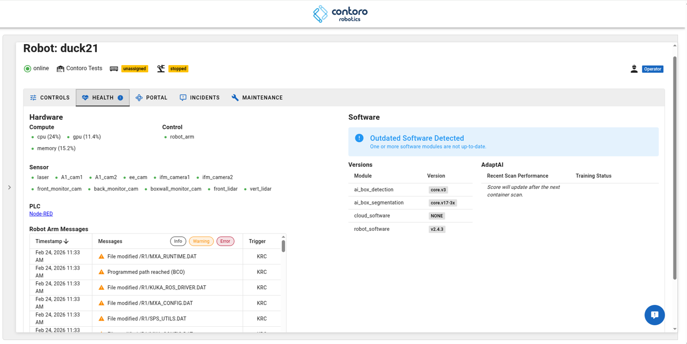
Portal: 3D view of robot position and container.
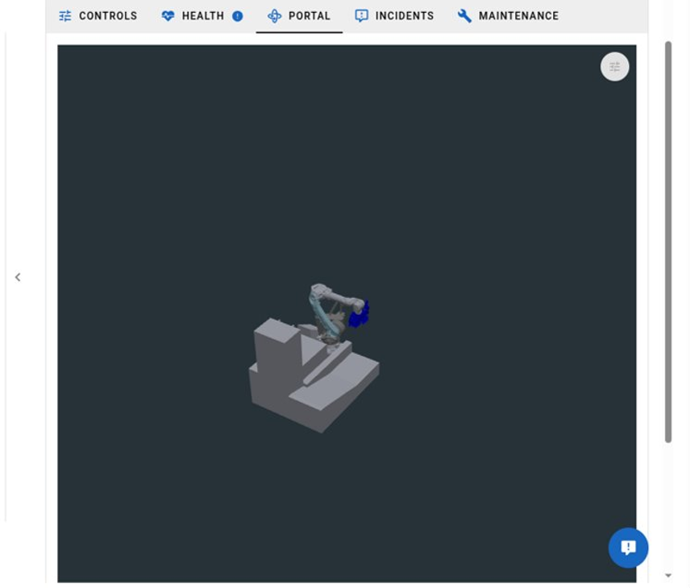
Select the type of incident or event
Write a few notes describing the event
Submit the incident report
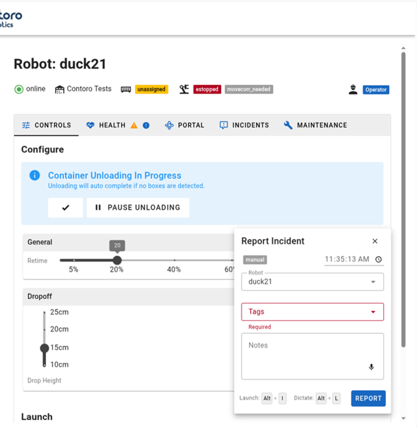
Position cart, drive Duck to container, set up conveyors, deploy fence
Choose Facility and Container ID in the UI
Click Green Start Button on the Safety Cart
Pause from UI, Reset from Safety Cart if Blue, E-Stop for emergencies
Robot auto-detects empty container and stops
Reverse setup: fence, conveyors, Duck to storage, cart
After E-Stop: Fill out the Incident Report form in the UI (choose tag, add notes, click Report).
Complete the full operation workflow under instructor supervision: setup, assign container, start unloading, monitor, handle scenarios, and teardown.